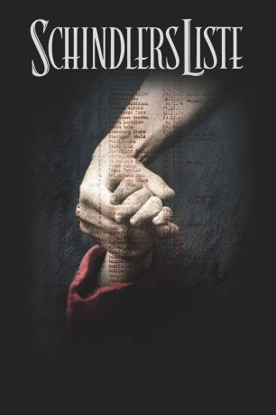

#1722 Schindlers Liste
Alternativ: Schindler's List
Auszeichnungen: 7 Oscars gewonnen für 5 Oscars nominiert 3 GoldenGlobes gewonnen 6 BAFTA-Awards gewonnen
 
 IMDB-Wertung: 8.9 / 10
IMDB-Wertung: 8.9 / 10  IMDB-TOP-Platzierung: 6
IMDB-TOP-Platzierung: 6  Metascore: 93
Metascore: 93 
Von einer wahren Begebenheit inspiriert, erzählt Schindlers Liste die Geschichte des Industriellen Oskar Schindler, der während des Zweiten Weltkriegs versucht, sich in Krakau eine Existenz aufzubauen. Aus finanziellen Gründen beschäftigt er nur Juden und leiht sich Geld von ihnen um eine Emaillefabrik zu gründen, die ihm letztlich großen Reichtum beschert. Als die Brutalität des Holocaust Krakau erreicht, riskiert er nicht nur sein Vermögen, sondern auch sein Leben um seine Arbeiter vor der Deportation zu bewahren.
Jahr: 1993
Dauer: 195 Minuten
FSK: 12
Land: USA Studio: UniversalTonspuren: DTS-HD - ,
Untertitel: Englisch, Deutsch,
Auflösung: 1080p (1920x1080) Größe: 36454 MB
Genre: Biographie, Drama, Geschichte
Regisseur:  Steven Spielberg
Steven Spielberg
Drehbuch: Thomas Keneally, Steven Zaillian
Soundtrack: John Williams
Darsteller:
 Liam Neeson als Oskar Schindler
Liam Neeson als Oskar Schindler Ben Kingsley als Itzhak Stern
Ben Kingsley als Itzhak Stern Ralph Fiennes als Amon Goeth
Ralph Fiennes als Amon Goeth Caroline Goodall als Emilie Schindler
Caroline Goodall als Emilie Schindler Jonathan Sagall als Poldek Pfefferberg
Jonathan Sagall als Poldek Pfefferberg Embeth Davidtz als Helen Hirsch
Embeth Davidtz als Helen Hirsch Mark Ivanir als Marcel Goldberg
Mark Ivanir als Marcel Goldberg Friedrich von Thun als Rolf Czurda
Friedrich von Thun als Rolf Czurda Norbert Weisser als Albert Hujar
Norbert Weisser als Albert Hujar- Pawel Delag als Dolek Horowitz
- Wojciech Klata als Lisiek
 Ludger Pistor als Josef Liepold
Ludger Pistor als Josef Liepold- Branko Lustig als Nightclub Maitre d'
 Jochen Nickel als Wilhelm Kunde
Jochen Nickel als Wilhelm Kunde Joachim Paul Assböck als Gestapo Clerk Klaus Tauber
Joachim Paul Assböck als Gestapo Clerk Klaus Tauber- Agnieszka Wagner als Brinnlitz Girl
- Maja Ostaszewska als Frantic Woman
 Thomas Morris als Grun
Thomas Morris als Grun- Michael Schiller als Plaszow SS Guard
 Götz Otto als Plaszow SS Guard
Götz Otto als Plaszow SS Guard- Michelle Csitos als (uncredited
- Katarzyna Smiechowicz als German Girl , uncredited
- Malgorzata Gebel als Wiktoria Klonowska
- Shmuel Levy als Wilek Chilowicz
- Béatrice Macola als Ingrid
- Andrzej Seweryn als Julian Scherner
- Krzysztof Luft als Herman Toffel
- Harry Nehring als Leo John
- Adi Nitzan als Mila Pfefferberg
- Michael Schneider als Juda Dresner
- Miri Fabian als Chaja Dresner
- Anna Mucha als Danka Dresner
- Albert Misak als Mordecai Wulkan
- Michael Gordon als Mr. Nussbaum
- Aldona Grochal als Mrs. Nussbaum
- Jacek Wójcicki als Henry Rosner
- Beata Paluch als Manci Rosner
- Piotr Polk als Leo Rosner
- Ezra Dagan als Rabbi Menasha Levartov
- Beata Deskur als Rebecca Tannenbaum
- Rami Heuberger als Josef Bau
- Leopold Kozlowski als Investor
- Jerzy Nowak als Investor
- Uri Avrahami als Chaim Nowak
- Adam Siemion als O.D. / Chicken Boy
- Magdalena Dandourian als Nuisa Horowitz
- Shabtai Konorti als Garage Mechanic
- Oliwia Dabrowska als Red Genia
- Henryk Bista als Mr. Löwenstein
- Tadeusz Bradecki als DEF Foreman
Datei: X:\1993\Schindlers Liste (1993, FSK12, 1920x1080).mkv seit 10.08.2015
Festplatte: HD 1992-1995
 Es gibt insgesamt 68 Filme in der Gruppe '1993'
Es gibt insgesamt 68 Filme in der Gruppe '1993'